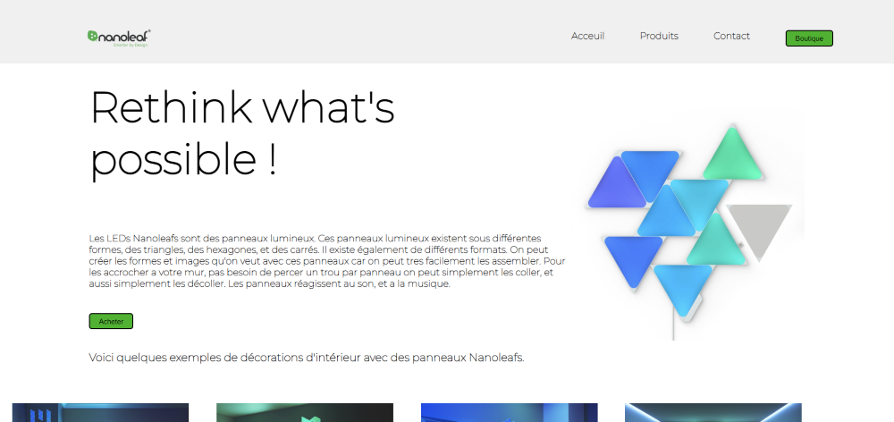

Pendant la première semaine de CDI nous avons appris ce qu'est l'HTML et le CSS, le projet de la semaine était de créer une landing page pour un objet connecté, j'ai dans mon cas choisis les panneaux LEDs Nanoleaf qui se colle au mur. Ces panneaux LEDs réagissent au son et a la musique.
